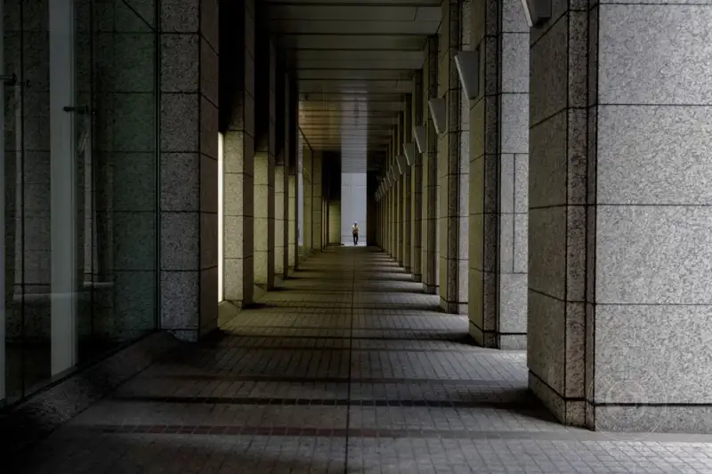
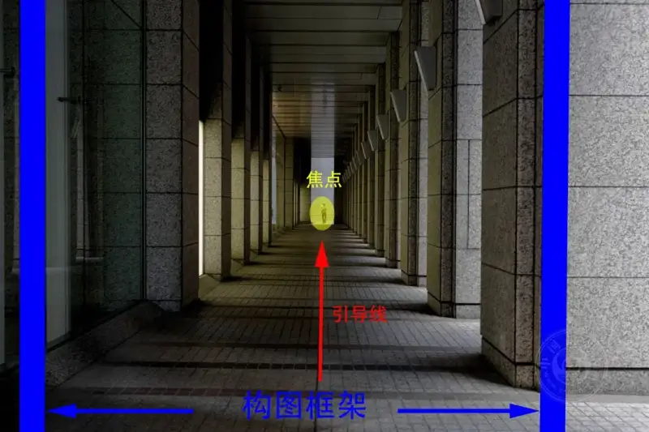
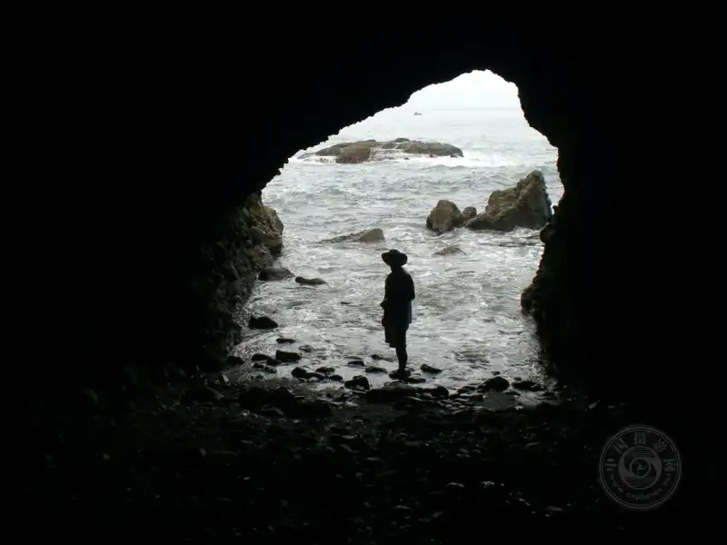
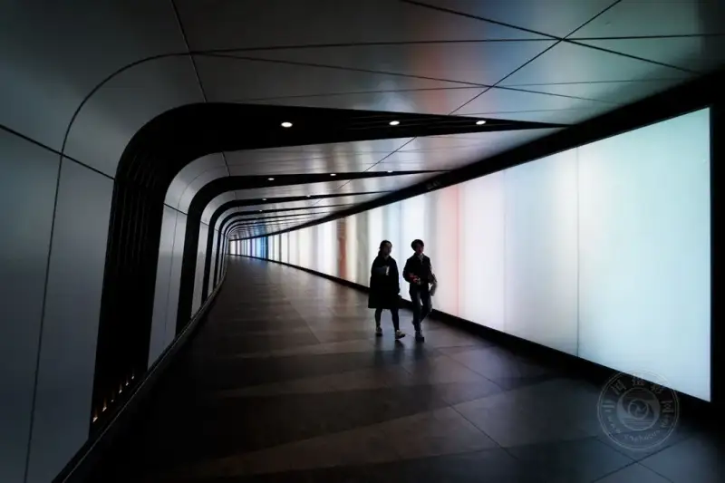
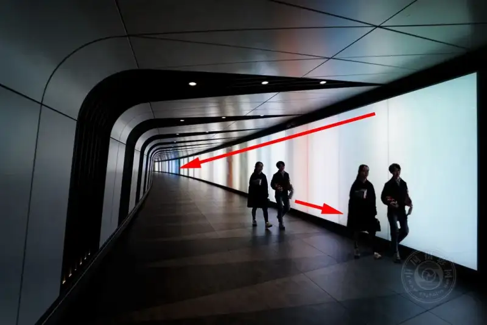
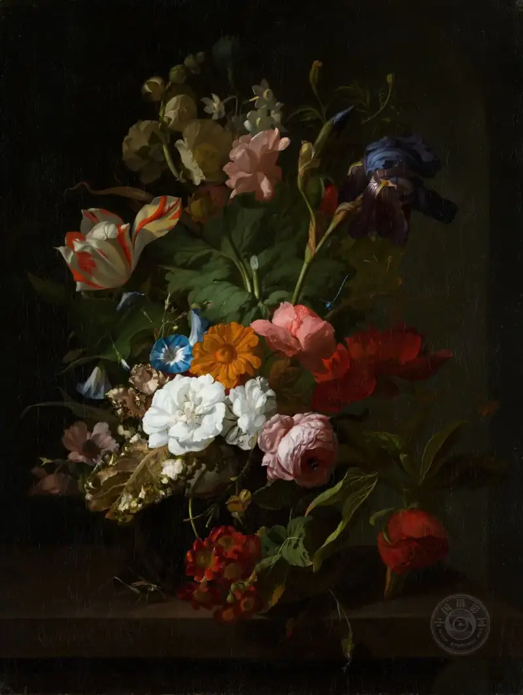
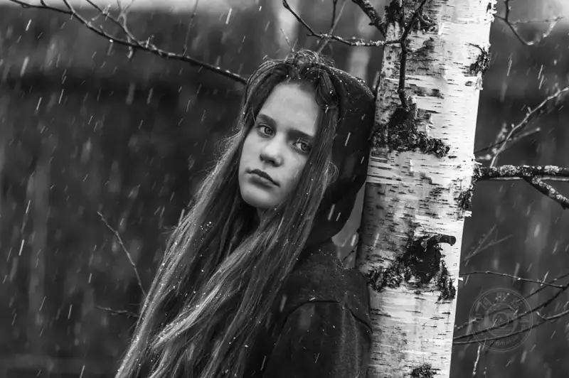
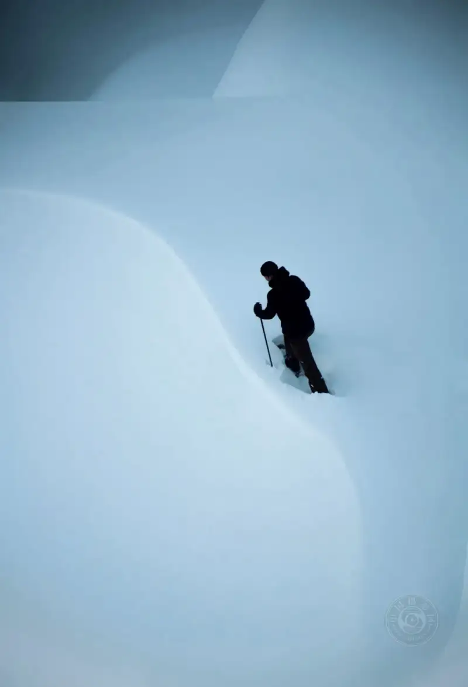
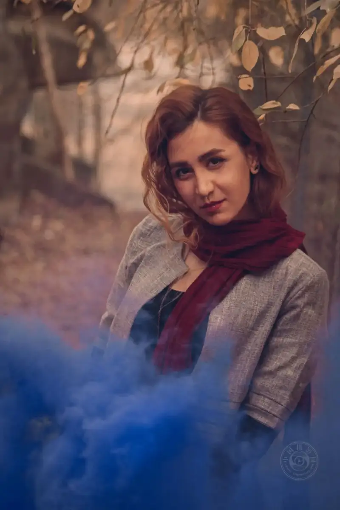

Published: 2023-05-09
Original link: https://www.cnphotos.net/academy/show-137.html
Are you a new photographer? Do you want to know why some photos look more interesting than others?
Photography has many fine points, but composition is the solid base of any photo.

©Simon Launay
Composition is essential because it tells the viewer what you meant when you made the photo. When you do not know where to look, or you feel nothing from the still image in front of you, those are usually images with poor composition.
How do you give a photo good composition?
Start with three things: the point of focus, leading lines, and the frame. These are the easiest composition tools to learn, to spot in a scene, and to use.

Point of Focus
The point of focus is the place in the frame that dominates the view and catches the eye at once.
©Manik Rathee
The image above is a clear example. It has a point of focus that is very easy to spot. When you look at the image, your eye goes straight to the hot air balloon. The balloon is so dominant that the rest of the image almost does not exist. The point of focus can be a dominant object placed near the subject to draw attention to the subject, or the focus can be the subject itself. That is the case in the image above.
©Callum Shaw
In this busy crowd photo, the man in the white T-shirt dominates the view. He dominates for a few reasons, but mainly because his shirt contrasts strongly with the people around him.
Do you think he is the focus of the crowd? I think he is. But in this photo, unlike the last image, the elements around him are essential.
Another way to create a point of focus is to use color temperature contrast.
Color temperature contrast appears when you put warm colors and cool colors in the same image. It works well to set an element of the scene apart as the focus.
©Shad Meeg
The image above uses color temperature contrast to create a focus. The sunset is very warm. The sky, the legs, and the shoes are all cool. This creates a contrast that pulls the eye firmly in toward the tree. If I break down this image, I would say the legs and shoes form a leading line. The tree is the subject area, and the sunset is the point of focus.

©Matt Artz
This image is an interesting example. It uses both a point of focus and a frame, and both are made by shapes. An easy-to-read shape that stands out from the area around it is a perfect candidate to become the focus.
©Hari Nandakumar
This image shows a more advanced use of focus, but I think you can still read it. The focus comes from the negative space between the herd of elk and the elk on the left. The leading line formed by the herd gaze also strengthens it.
When negative space separates the subject from the rest of the frame, it can create a point of focus.
Leading Lines
A leading line in photo composition is a real physical line or an implied line. It draws the viewer eye into the picture and leads to the subject area.
©Sophie Dale
The image above has a leading line that is easy to read. The mountain at the end of the line is an essential part of this composition, because it gives a subject area.
The most common problem new photographers have with leading lines is that the line does not lead to a subject area, or it leads the viewer attention away from the subject area.

©Marcos Nieto
The image above has a clearly visible leading line. It looks like one of those tricky shots I just mentioned, because the line runs past the walking couple, who are the subject area.
But that is how it goes. Composition is complex, and there is always a trade-off. This composition works (even though the line passes the subject) for two reasons. The subject is a shape that stands out from the area around it. More important is the subject place within the frame and along the line.

I used Photoshop to copy the couple to a spot closer to the camera, still along the leading line. Suppose the photographer had waited to shoot until they were here. Now the leading line becomes a problem, because the line behind the couple visually outweighs the line in front of them.
©David Glessner
Earlier we talked about the gaze. The gaze is an unseen leading line formed when a person or animal looks intently in a certain direction. Think of it this way. When you see someone stare at something, do you naturally look to see what they are looking at? That is the gaze, and it is a powerful tool in photography.
But, like leading lines, we want to direct the gaze to what matters, usually the subject area.
The image above has a strong gaze. It is not bad. But it would be stronger if the man held something interesting, like a wrench. The wrench would lock the subject area and add a better story element. The wrench would also become the point of focus. When you can, use all three tools in one photo: point of focus, leading lines, and frame. Each one strengthens the composition.
©Sophie Dale
Many beginners think a leading line must start in the foreground and run all the way into the far background. That is not a rule. A good leading line draws the eye and moves it toward the subject area, and it can come from any direction.
Watch for repeated objects that copy your leading line by accident. They can break the composition. For example, in the image above, I would remove the wake of the boat far off in the upper left, because it pulls attention away from the intended leading line and the subject area.
©Sophie Dale
Once the second wake is removed, the intended leading line and the boat as the subject area become stronger.
In your composition, make sure your leading line stands out, with no other competing distraction pulling the eye.
©TJ Dakota
Leading lines can also be centered. In other words, as in the image above, a line that starts at the edge of the frame and runs inward works well when it ends at the subject area.
The Frame
©Pine Watt
When we talk about a frame, we do not mean using a real picture frame to shoot. Though that is a lovely idea. I have seen some nice photos made with a picture frame in the scene, and a few are good. I encourage you to try it.
A compositional frame in photography is an object or an implied line. It stops the eye from moving in one direction and forces it to look the other way.
©Alessio Furlan
The image above is a classic example of using a frame in landscape photography. Here the frame gives the final image two key compositional elements. First, it forces the eye up toward the more exciting part of the scene. Second, when the plain grassland does not draw much attention, it adds interest in the foreground.
This shows how a foreground frame pushes the eye up and inward toward the subject area.

©Europeana
The idea of a compositional frame began with early Baroque painters, who often used it in still life and portrait paintings.
A vignette is a frame that pushes the eye inward from all sides. It is one form of compositional frame.
©Tucker Good
In the image above, the brick walls on both sides of the woman push the viewer gaze inward from the sides.
A frame can include all edges of the image, or only a few edges, or even just one edge.

©Vitolda Klein
In the photo above, the frame is the tree on the right. It forces the eye left toward the subject face.

©Nico Iseli
The frame does not have to be a main visual element. But it does need to separate the subject from the surroundings. This photo is a great example of a subtle frame that works very well.
But when you make a frame, make sure it does not visually dominate the subject. In the photo below, for example, the blue smoke stands out too much and pulls attention away from the subject.

©Soheil Kmp
If you master these three composition tools of point of focus, leading lines, and frame, I am sure your photos will improve.
To sum up the key points: make sure your composition always points to your subject. The point of focus can also be the subject. Leading lines can be physical or implied. They do not have to start in the foreground and move to the background, but they should point to the subject area. The frame is a powerful tool that directs the viewer gaze in a certain direction. Do not let your frame visually overpower your subject.